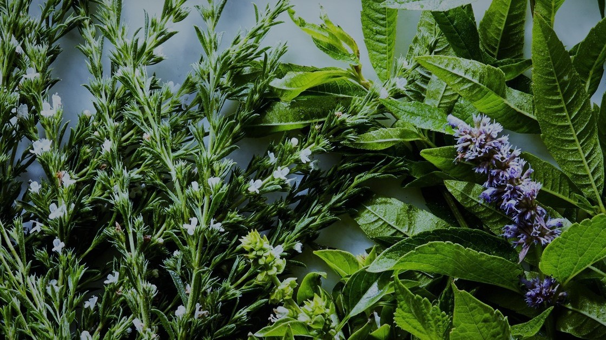
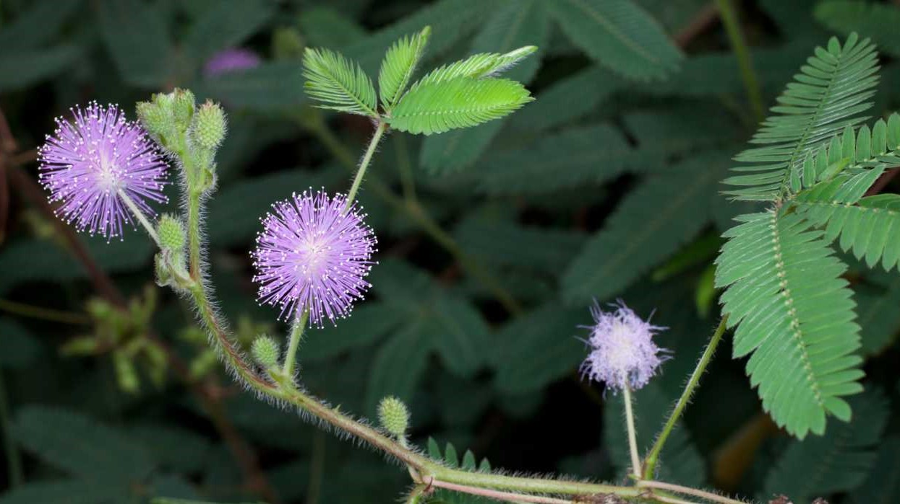
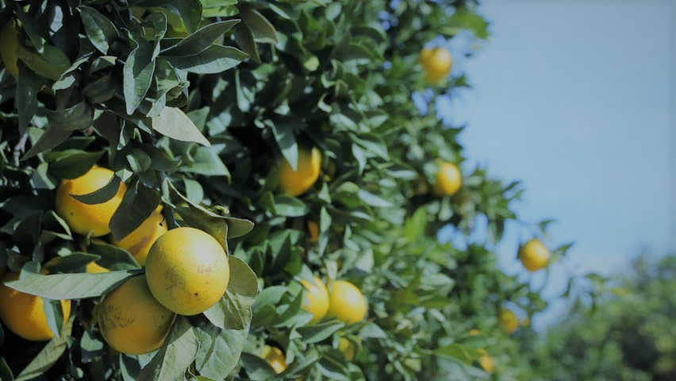

Sukulentų auginimo patirtis
Sukulentai – naujasis namų, aplinkos ir interjero „trendas“, kuris jau gana ilgą laiką karaliauja jaukumo viršūnėse. Išties sunku atsispirti įvairiausių spalvų, dydžių ir tobulų formų augalams...
2019 sausio 13

Prieskoniai ant palangės
Jei prie namų neturite daržo ar gyvenate bute ir nuolat norite pagardinti patiekalus šviežiais ir kvepiančiais prieskoniais, jums pats laikas pradėti auginti savo mini daržiuką...
2019 sausio 7

Jautrioji mimoza
Ant palangės galima užsiauginti įvairiausių augalų, tačiau jautrioji mimoza gali tapti išties linksmu išbandymu! Ši gėlė tikra drovuolė...
2019 sausio 3

Bonsai priežiūra
Kai ateina kalendorinė žiema, kokia ji bebūtų – snieguota arba šlapia, vis daugiau veiksmo iš lauko persikelia į vidų. Šį kartą norime pristatyti kiek kitokius kambarinius augalus – tai bonsai medelius...
2018 gruodžio 27

Citrinmedžio užauginimas
Namie galite auginti ne tik kambarines gėles. Siekiant įvairovės ir praktiškumo, pabandykite užauginti citrinmedį iš sėklos...
2018 gruodžio 21

Eglučių auginimas
Artėja Kalėdos...Argi nebūtų puiku namie turėti eglutę, kuri tarnautų kelerius metus? Su didelėmis pastangomis - įmanoma. Tereikia daug kankorėžių su sėklomis ir didelės kantrybės...
2018 gruodžio 15